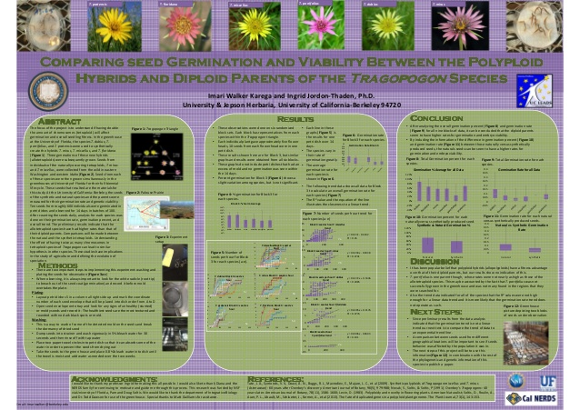

Research Background
Undergraduate Research Experiences
Lamont Doherty Earth Observatory Summer Research Experience 2014

Summer away in new york using various tools in microbiology and geochemistry to explore the viability of using sediment cores containing ancient bacteria to predict past temperatures from hundreds of thousands of years ago.
UC Berkeley Summer Research Experience 2012
<>Spent the summer at Berkeley studying the evolution of plants.